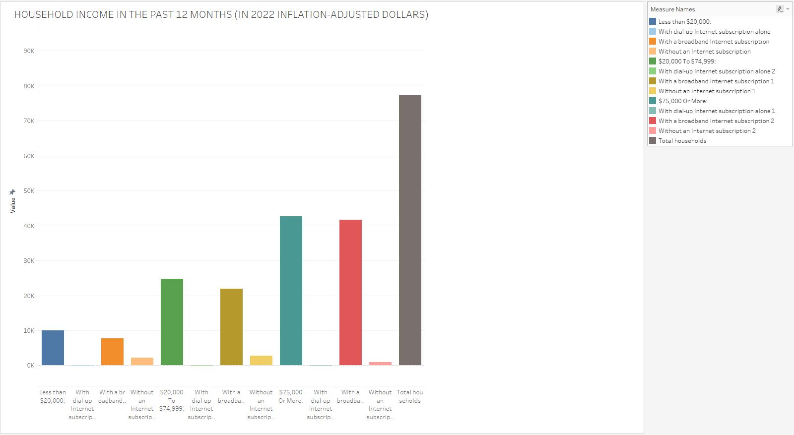

What is the most common type of computing device in Yolo households?

Types of computers used in Yolo County.
Quick Summary
In Yolo County group of 77,323 households were surveyed, among them 75,135
have some form of computing device. With desktop or laptop computers being the most common (65,774). Additionally, 6,940 households have tablets or other portable wireless computers,
and 2,178 households have other types of computers, while 2,188 households reported having no computers. While 75,135 households has one or more tpyes of computing devices.
How does the distribution of Internet
subscription types (dial-up, broadband, none) vary across different income groups?

HouseHold Income in the Past 12 Months (2022 Inflation-adjusted Dollars) in Yolo County.
Quick Summary
Among the 77,323 households. Among these households, 9,997 have an annual income of less than $20,000, and out of those 7,766 have no internet subscription.
While 2,231 have a broadband internet subscription, and none have dial-up internet alone. In the $20,000 to $74,999, there are 24,729 households, with 21,952 having a broadband internet subcriptions,
2,777 without any internet subscription, and none having dial-up internet alone. FOr house holds with $75,000 or more, 42,597 households do not have dial-up subscription alone, 41,621 have broadband internet subscription.
and 976 do not have any internet subscription.
What is the distribution of internet
subscription types in Yolo County?

Type Of Internet Subscriptions in Yolo County.
Quick Summary
In Yolo county there are 71,339 households with an internet subscription. Out of these 66,985 households have a broadband internet subcrion, with 10,998 have cellular data plan
in addition to their broadband subscription. Additionally, 57,144 households have broadband internet through tech like, cable, fiber optic, or dsl. And 5,661 households have satellite internet service.
On the other hand, there are 5,984 households in Yolo county that do not have any intenret subscription.

Computing devices people own in El Dorado County.
Quick Summary
Computing devices people own in El Dorado County.
Quick Summary
Internet Subscriptions in El Dorado County.
Quick Summary
Type of Internet Subscriptions in El Dorado County.
Quick Summary

ENTER IMAGE CAPTION HERE.
Quick Summary
ENTER IMAGE CAPTION HERE.
Quick Summary
ENTER IMAGE CAPTION HERE.
Quick Summary

What percentage of households per county have at least one device?
Quick Summary

What percentage of households per county have at least one device?
The percent ranges from 93.2 to 98.3 as shown by the color scale
Quick Summary
Summary
WRITE FINAL SUMMARY HERE.